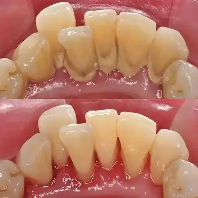
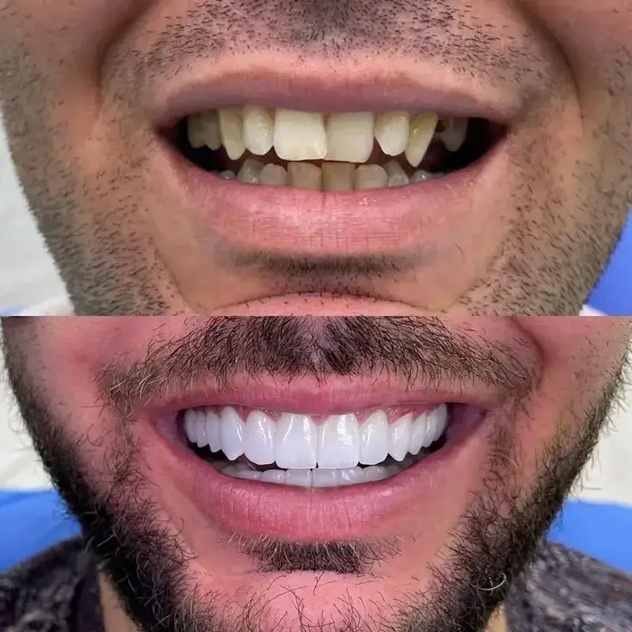

Tratamento de canal com microscopia digital, que permite visualizar detalhes invisíveis a olho nu. Procedimento confortável, com anestesia local e recuperação rápida — preservando seu dente natural por muitos anos.
A endodontia é a especialidade que trata a polpa dentária — o "nervo" do dente. Quando ela inflama ou infecta (por cárie profunda, trauma ou fissura), o tratamento de canal remove o tecido doente, limpa o interior e sela o dente. Com a microscopia digital, conseguimos enxergar canais acessórios e detalhes invisíveis a olho nu, aumentando a precisão e o sucesso do tratamento.
Pacientes com dor de dente intensa, sensibilidade prolongada ao frio ou calor, inchaço na gengiva ou abscesso. Também indicado para dentes com cáries profundas, fraturas ou que sofreram trauma. O tratamento de canal é a melhor opção para salvar o dente natural.
Com o microscópio, ampliamos a imagem em até 30 vezes, permitindo localizar canais extras, remover todo tecido infectado e realizar uma limpeza mais completa. Isso reduz significativamente as chances de infecção futura e aumenta a longevidade do dente tratado.
Exame clínico, radiografias e testes de sensibilidade para identificar a causa da dor e planejar o tratamento com precisão.
Procedimento totalmente indolor com anestesia local. O dente é isolado com um lençol de borracha (dique de borracha) para garantir assepsia total.
Com o microscópio digital, abrimos o dente, removemos a polpa infectada e limpamos os canais radiculares com instrumentos especiais.
Os canais são preenchidos com um material biocompatível e selados para evitar novas infecções. Em alguns casos, o tratamento é concluído em duas sessões.
Após o tratamento de canal, o dente recebe uma restauração ou coroa para protegê-lo e devolver sua função e estética.
Tratamento de canal

RestauraçãoRestauração pós-canal

CoroaCoroa sobre dente tratado
Prefere conversar? Chama no WhatsApp — quem responde é a equipe clínica.
É o procedimento que remove a polpa dentária (nervo) inflamada ou infectada, limpa o interior do dente e o sela para evitar novas infecções. Preserva o dente natural e elimina a dor.
Não! O procedimento é feito com anestesia local, garantindo conforto durante todo o processo. A dor que você sentia antes do tratamento desaparece após a intervenção.
Em média de 1 a 3 sessões, dependendo da complexidade do caso. A maioria dos tratamentos é concluída em duas visitas.
É o uso de um microscópio que amplia a imagem em até 30 vezes, permitindo visualizar canais acessórios, fraturas e detalhes invisíveis a olho nu. Isso aumenta a precisão e o sucesso do tratamento.
Após o tratamento, o dente precisa de uma restauração ou coroa para protegê-lo. Com os cuidados adequados, o dente tratado pode durar por muitos anos.
Avaliação de 1 hora com diagnóstico preciso. Respondemos em até 2 horas úteis.
R. da Praça, 41 — Pedra Branca, Palhoça - SC, 88137-086, Brasil